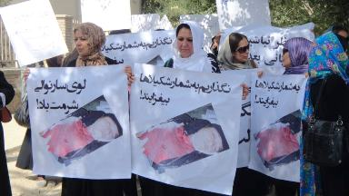

|
|
راهپیمایی زنان در افغانستان در اعتراض به عدم رسیدگی به پروندهی قتل شکیلا و دیگر قتلهای ناموسی
چهار شنبه11 مرداد 1391
زنان جوان برای تغییر: امروز، سه شنبه، یک تعداد زیاد محصلین، جوانان، اعضای جامعه مدنی، و فعالین حقوق بشر در جریان یک راه پیمایی مسالمت آمیز خواستار عدالت برای شکیلا، دختری 16 ساله که شش ماه قبل به قتل رسید و تا حال به قضیه اش رسیده گی نشده است، و دهها زن دیگری که فقط به خاطر زن بودن مورد خشونت و یا قتل قرار گرفته اند شدند. نهاد زنان جوان برای تغییر یکی از ارگان های همکار در برگزاری این راه پیمایی بود.
یکی از اصلی ترین شعار های راه پیمایی امروز این بود: "نگذارید به شمار شکیلا ها افزود شود." این نشان می دهد که راه پیمایی امروز نه تنها برای شکیلا، بلکه برای همه زنانی بود که فقط به خاطر زن بودن شکنجه می شوند و یا به قتل می رسند. ما می خواهیم به همه این جنایات علیه زنان پایان داده شود. علاوه بر شکیلا، چهل و دو زن در افغانستان از نوروز تا به حال کشته شده اند و اکثریت این قضایا هنوز پیگیری نشده اند. ما برای همه این زنان و برای شکیلا عدالت می خواهیم. ما می خواهیم این قضایا به صورت شفاف مورد پیگیری قرار گیرند. ما می خواهیم ارگان های قضایی مملکت نشان بدهند که زندگی یک زن در افغانستان ارزش دارد و آنها به وضعیت اسفبار زنان در این وطنِ مشترکِ مرد و زن توجه دارند.